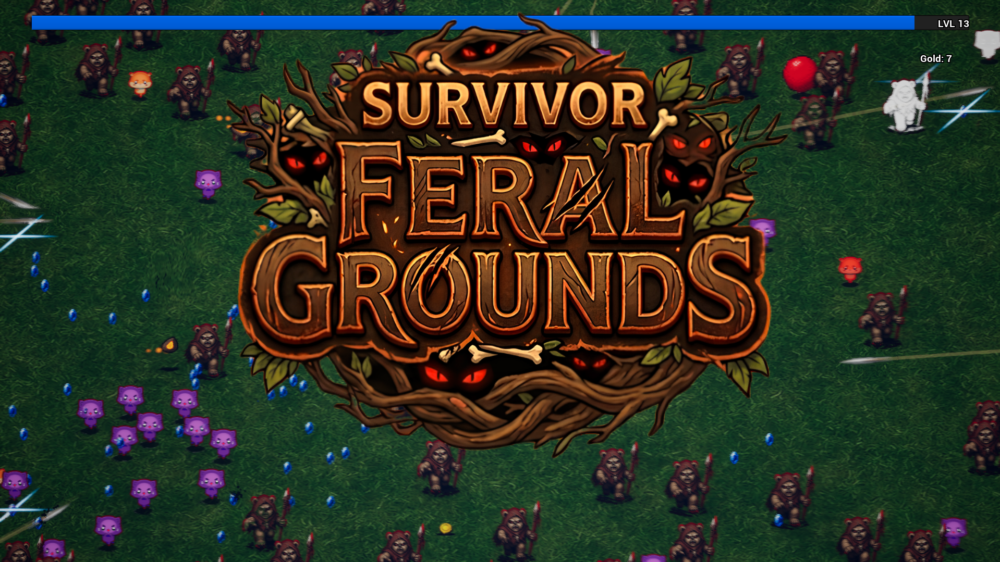
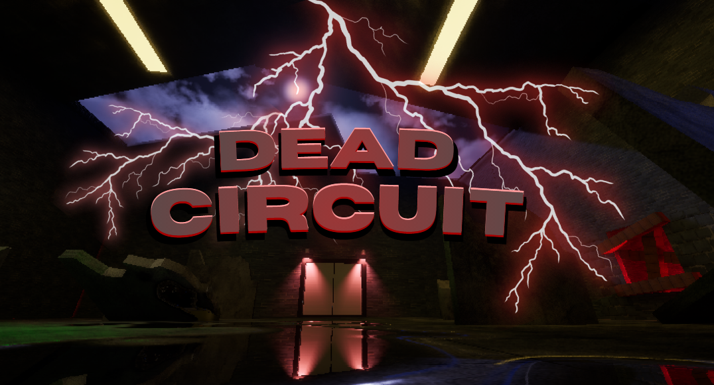
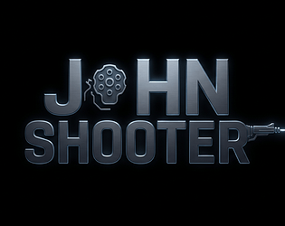
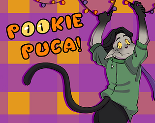

Feral Grounds: Survivor
Solo Developer
A high-density 2D horde survival game built in UE5 featuring custom actor pooling, 7 modular weapon architectures, and an escalating 5-minute difficulty curve managing up to 300 concurrent enemies.
Technical Game Designer & Systems Developer

Solo Developer
A high-density 2D horde survival game built in UE5 featuring custom actor pooling, 7 modular weapon architectures, and an escalating 5-minute difficulty curve managing up to 300 concurrent enemies.

Solo Developer
A retro-styled arcade zombie survival shooter engineered from scratch in UE5. Features dynamic enemy wave directors, responsive combat mechanics, and weapon progression loops.

Lead Technical Designer
A fast-paced FPS roguelike prototype centered on tight movement mechanics, modular stat modification architecture, and scalable weapon behaviors.

Level & Systems Designer
A narrative-driven comedic horror game built in team collaboration for Scream Jam 2025. Showcases puzzle minigames, atmospheric pacing, and event trigger systems.
2D puzzle-platformer created in Unity featuring simultaneous multi-character switching puzzles and custom C# gameplay mechanics.